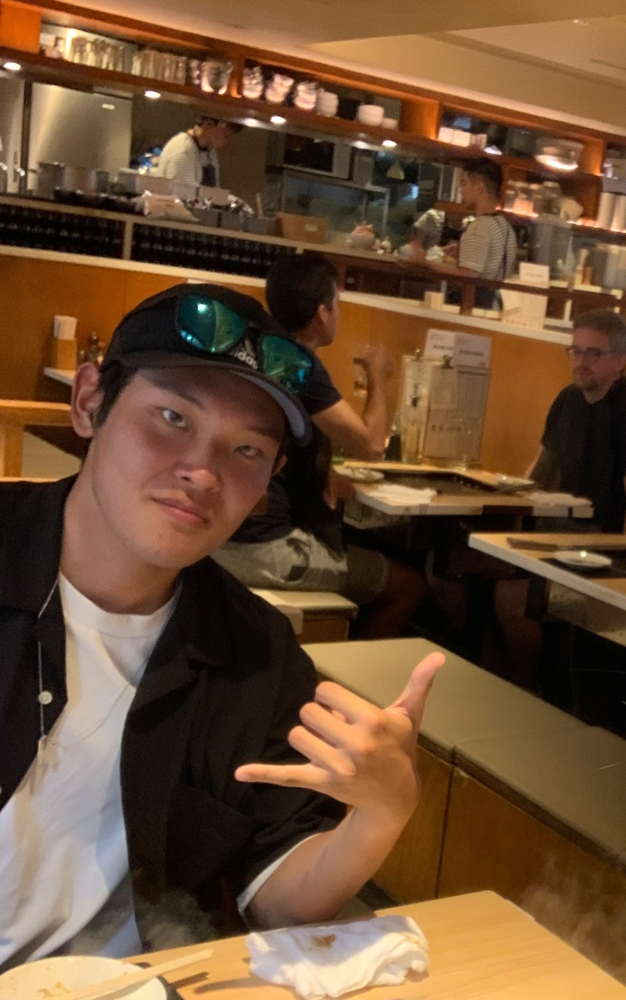

未来の自分のために、今を頑張る
目の前の困難は、未来の自分への先行投資だと思っています。今の積み重ねが、あとで選べる選択肢を増やしてくれるはず。だから、全力で今を頑張ります。

01 — Introduction
Azuma Leandro
ブラジルと日本のハーフで、茨城大学で情報工学を学ぶ学生です。
茨城大学 工学部 情報工学学科
ブラジル × 日本のハーフ
2006.07.26
ホテル宴会スタッフ
NPO法人ドットジェイピー（OPSチーム）
小さな「欲しい」が手に入る社会
02 — What I believe
目の前の困難は、未来の自分への先行投資だと思っています。今の積み重ねが、あとで選べる選択肢を増やしてくれるはず。だから、全力で今を頑張ります。
相手にインパクトを与えるとは相手の期待や予想を超えること。他の人にはない、柔軟な発想力で相手の印象にずっと残るものを作ることを意識してます。
03 — Likes
仕事とは関係なく、ふだん好きで触れているものです。
何もしない時間が好きじゃないので、ヒマな時に行きます。
流行りのアニメはほとんど見てます。あと、ドラえもんで日本語学びました（ガチ）
遠くへ行くことが心の息抜き。ヨーロッパなどに行ってみたい。
予定がなくても、誰かと話しているだけで満たされるタイプです。
いろんなジャンルの曲を聞きます。ずとまよの大ファン。
05 — Contact
お仕事の依頼やご相談、ちょっとした雑談まで、
なんでもお気軽にご連絡ください。
SNSのDMでも受け付けています
Instagram @doro_doloWeb Site
Landing Page